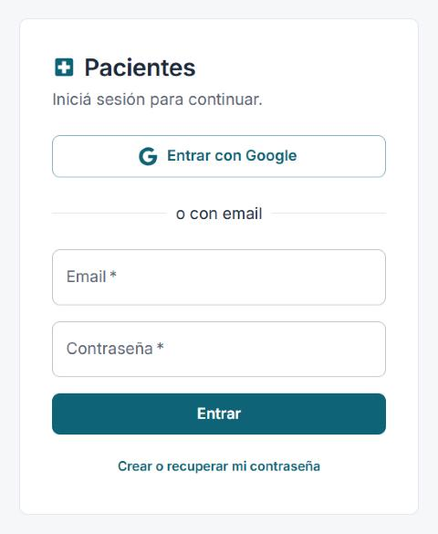
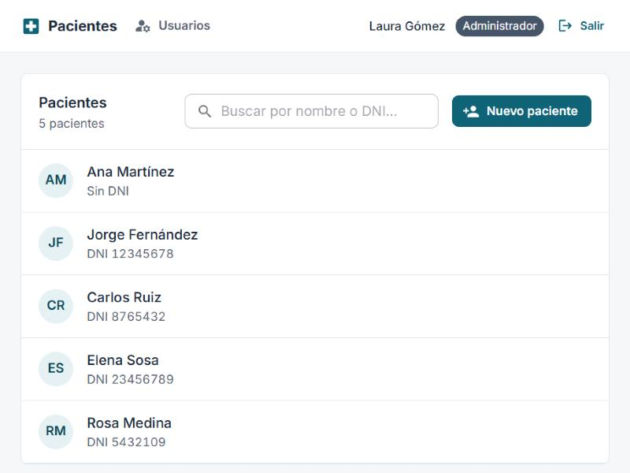
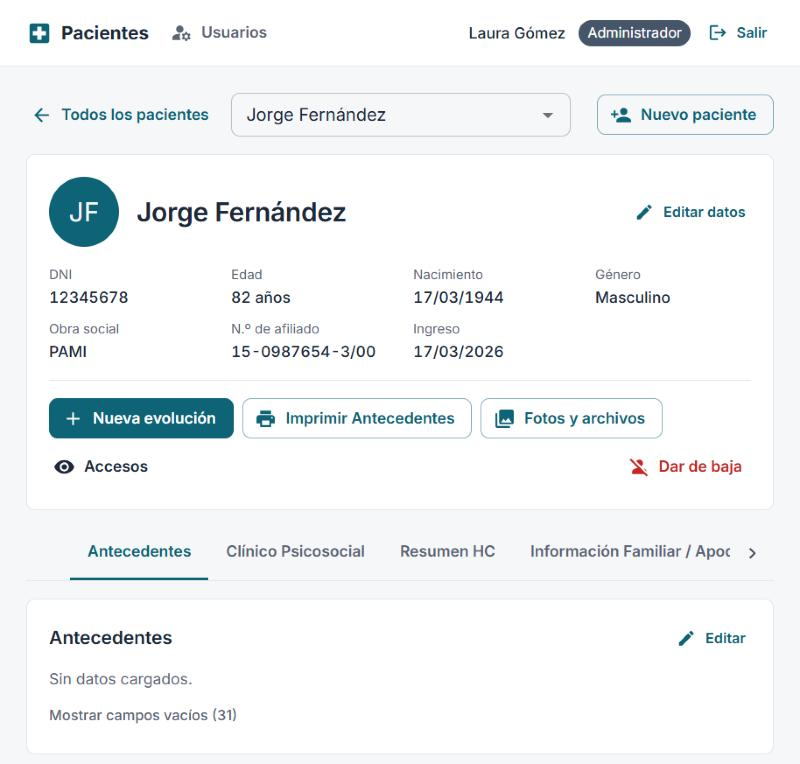
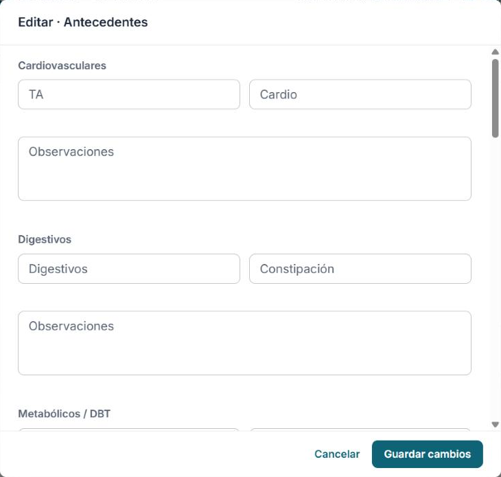
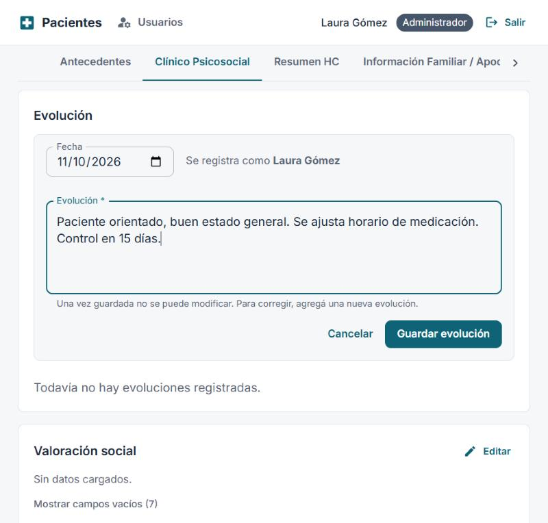
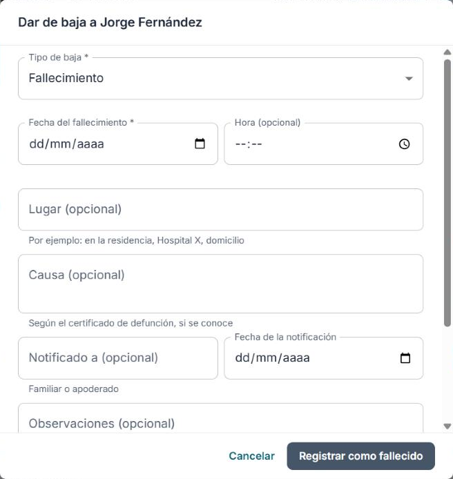
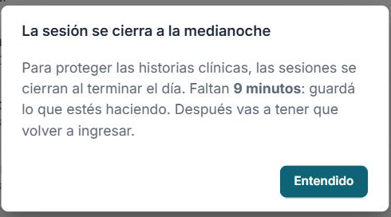
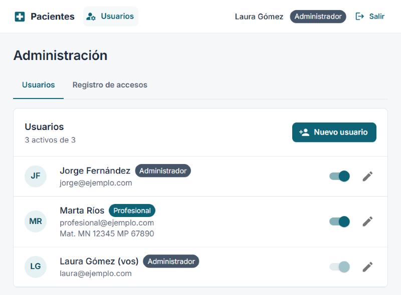
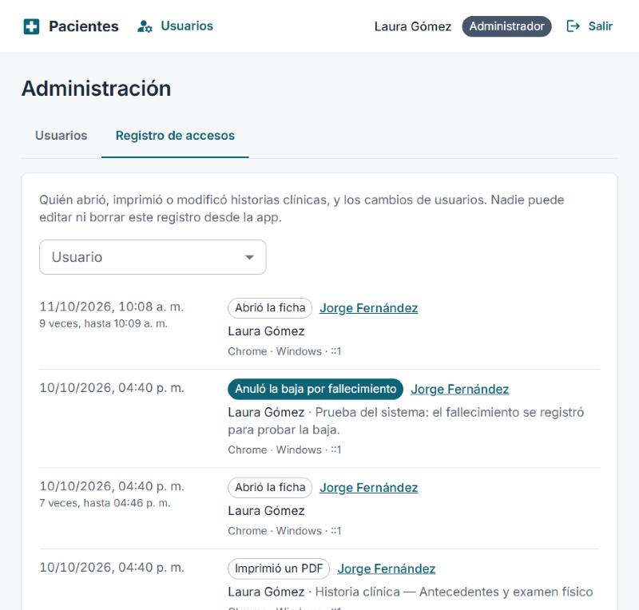

Manual de usuario
Cómo usar el sistema de historias clínicas, paso a paso. Funciona en computadora, iPad y celular.
Octubre 2026 · Las capturas usan datos ficticios.

Si aparece "Tu cuenta no tiene acceso al sistema", pedile a un administrador que te dé de alta.
Para salir, tocá Salir arriba a la derecha.
Abrir un paciente: en la pantalla de inicio está la lista de pacientes. Escribí el nombre o el DNI en el buscador y tocá el paciente.

Cambiar de paciente: dentro de una ficha, usá el buscador de arriba o tocá Todos los pacientes para volver a la lista.
Crear un paciente:
Arriba están los datos personales y los botones principales. Debajo, la historia clínica dividida en pestañas: Antecedentes, Clínico Psicosocial, Resumen HC, Información Familiar / Apoderado e Interconsulta.

Editar datos:
Si cerrás sin guardar, el sistema te pregunta antes de descartar lo escrito.

Campos vacíos: cada sección muestra solo lo cargado. Para ver todos los campos, tocá Mostrar campos vacíos.
Historial de cambios: el ícono del reloj junto a algunos campos (diagnóstico, tratamiento, interconsulta) muestra cada versión anterior: antes, después, fecha y quién lo cambió.
MMSE: al editarlo, el total y su interpretación se ven abajo mientras cargás los puntajes. El máximo es 28.

Tocá Fotos y archivos (o la foto del paciente) para abrir la galería.
El PDF sale con el nombre y la matrícula del profesional. Si imprime una secretaria/o, sale a nombre del profesional al que está asignada.
La historia clínica nunca se borra. El paciente queda guardado y se puede ver e imprimir, pero ya no se puede modificar.

| Tipo | Qué se completa |
|---|---|
| Fallecimiento | Fecha (obligatoria). Opcionales: hora, lugar, causa, a quién se notificó y cuándo, observaciones. |
| Alta, traslado o derivación, decisión del paciente o la familia, otro | Motivo (obligatorio). En traslado, la institución de destino. |
Los pacientes dados de baja no aparecen en la lista. Para verlos, tocá Mostrar dados de baja al pie de la lista.
Reactivar: si un paciente con alta o traslado reingresa, abrí su ficha y tocá Reactivar. Un fallecimiento no se reactiva: si se cargó por error, solo un administrador puede anularlo.
Para proteger las historias clínicas, todas las sesiones se cierran a la medianoche. Al día siguiente hay que volver a ingresar.
10 minutos antes aparece un aviso. Tocá Entendido y guardá lo que estés haciendo: el cierre no se puede posponer.

Si el equipo quedó con la sesión abierta de un día para otro, se cierra apenas se vuelve a usar.
Los administradores ven Usuarios en la barra superior.

| Rol | Matrícula | Puede |
|---|---|---|
| Administrador | Opcional | Todo, incluida la gestión de usuarios |
| Profesional | Obligatoria | Ver y editar pacientes, evoluciones, archivos e imprimir |
| Secretaria/o | No lleva | Lo mismo que un profesional; imprime a nombre de su profesional |
Registro de accesos: muestra quién abrió, imprimió o modificó cada historia clínica, y cuándo. Está en Usuarios → Registro de accesos (de todos) y en el botón Accesos de cada ficha (de ese paciente). Nadie puede borrarlo.

Anular un fallecimiento cargado por error: en la ficha del paciente, tocá Anular (error de carga) y escribí el motivo.
Me olvidé la contraseña. En la pantalla de ingreso, escribí tu email y tocá Crear o recuperar mi contraseña.
No encuentro a un paciente. Puede estar dado de baja: buscalo por nombre o DNI (aparece con la etiqueta "De baja" o "Fallecida/o"), o tocá Mostrar dados de baja.
Me equivoqué en una evolución. No se puede editar. Agregá una nueva evolución con la corrección.
Quiero ver qué decía un campo antes. Tocá el ícono del reloj junto al campo.
No puedo editar un paciente. Está dado de baja. Si reingresó, tocá Reactivar en su ficha.
Me pide ingresar de nuevo. Las sesiones se cierran todos los días a la medianoche. Volvé a ingresar.
Soy secretaria/o y no puedo entrar. Tu usuario no tiene un profesional asignado activo. Pedile a un administrador que lo configure.